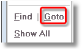
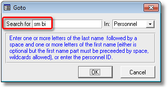

|
|
PRS News & Tips | April 2015 |
We’ve just released PRS 8.1.6. To download and install this recommended upgrade go to the Installing the Latest PRS Client section on our Updates web page and follow the instructions.
What’s New in PRS 8.1.6
We’ve added a new command to import Personnel and Sites from an Excel CSV file and a few other changes, though most of the work in this release is under the hood in the form of performance and stability enhancements.
For a full list of the changes since the previous release see the PRS Changelog web page.
New command to import Personnel and Sites from Excel
 in version 8.1.6
in version 8.1.6
Using the new Tools→Import→Personnel and Sites from CSV File… command you can import Excel spreadsheet data to create new PRS Personnel and Site records:
Goto List entries retained across upgrades
in version 8.1.6
Modifications have been made to the GoTo list feature in this release to ensure that list entries will not be lost after subsequent PRS Client upgrades.
Revamped Import and Export menus and commands
in version 8.1.6
After adding the new Import CSV File command we:
-
Moved existing import and export commands in the Tools menu into separate Tools→Import and Tools→Export sub-menus.
-
Renamed Tools→Export to Personal Organizer… command to Tools→Export→CSV Files… to reflect its more general use.
Hide rejected and withdrawn candidates on
in version 8.1.6
The behaviour of the Hide rejected candidates checkbox under the Candidate Activities list on the Vacancies form has been changed to Hide rejected and withdrawn candidates:

Tips and Tricks
Goto is faster than Find
Alongside the Find command on Personnel, Invoices, Sites and Vacancies forms there is a Goto command (shortcut Alt+G):

The Goto command is much faster at finding individual records than the Find command. For example to go to Bill Smith click Goto on the Personnel form then enter the first few characters of the surname a space then the first few characters of the first name e.g. sm bi, this will take you to the first person whose last name starts with sm and first name starts with bi.

If it matches the wrong person click the Forward Arrow button at the bottom of the form or advance the mouse wheel.
There’s also a special Ctrl+Shift+T shortcut if you’re wanting to go to a Time Sheet.
Need help?
Our Support web page explains how to get answers to PRS questions and includes links to articles on Maintaining Database Reliability and Performance and PRS Best Practice Deployment.
|
Important
|
If you no longer wish to receive this newsletter please email support@prshq.com with the word UNSUBSCRIBE in the subject line. |